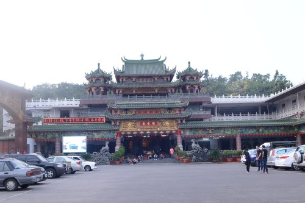
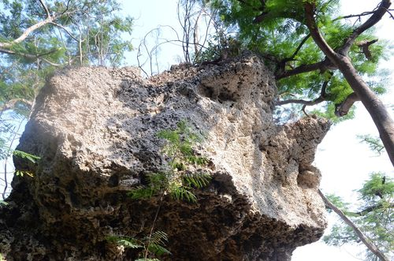

|  清水寺全貎-本校同學自行拍攝 |
 清水巖景觀-本校同學自行拍攝 |
【一、清水巖由來】是寶島台灣勝蹟之一，位於南臺灣高雄市之南，在林園區潭頭里。清水巖園鄉屬鳳凰山麓，為一隆起珊瑚礁石灰岩地質，是台灣本島海岸上升明顯的丘陵地形，居於港都高雄市東南方，南臨台灣海峽，東望下淡水溪，環山綺巖美石（石蛙、石虎、石龜、石船）、仙洞、靈泉等天然景色，為全省之冠。山麓有泉水從石縫湧出，晝夜不停，澄清見底，此即清水巖命名之由來。在清代鳳山縣時期稱鳳山縣八景之一「鳳岫春雨」，主要景點有清水寺、靈泉池、龍蟠洞、長壽茄苳、桃源洞、石船、石台灣、唐榮墓…等。從巖上遠眺，林園鄉境、屏東平原盡在眼中，琉球嶼、琅嶠、大武諸山隱約可見。 |
|
【二、清水寺的建立 】清水巖的南麓有一座觀音堂，稱之為「清水巖寺」，創建於清康熙5年6月15日(西元1666)，原始因有地方農夫，在耕作日入而息之際，路經巖下，發現山邊一把火焰，光芒數尺，照明四周，及近視之，不見一物，如此數次，其疑不已。於是特在光天化日之下，撥冗循徑往探，結果非他物體，惟有巖邊樹上懸掛小紅香灰囊一隻，兩面寫明釋迦牟尼佛及觀音菩薩兩座大慈大悲佛號，當時其情傳遍鄰里，感召地方居士，結庵供奉。後來經地方居士張簡立先生信佛心堅，有所感應，則在道光十四年，發起將草庵改建為莊嚴寺宇，期間時有修楫，到民國16年(1927)翻蓋，而後數十年，缺乏營繕，致使廟壁剝落，宇項坍塌。至民國53年(1964)8月15日興工全面改置，管理人有劉然、劉萬生、劉必準、劉見章、劉樹柏、許登仕等，並歷聘主持張簡賜、謝讚、葉昌玄、張簡片等，以資管理寺產及伺季典與誦經禮佛之責。 |
|
【三、南臺灣一大名勝 】台灣通史捲二十二宗教志，鳳山縣清水巖寺，在縣治之南，則鳳山也。鳳山縣志稱鳳山有十三勝，而清水巖其一。歷經該山寺平原處中浮一小丘昔有二人狀如相攜，形態天然，名之為石翁媼，又有仙人一跡，趾痕深約二分五指宛然，今皆不復存矣。又有獅子喉，於山上闢一竅，徑六尺許，作獅子張口勢，相傳其喉若吐煙，則東港必遭回祿，此理殊不可解。旁有兩小丘，對峙如鐘鼓，此皆肖形而名。寺之西南有一天然石洞曰仙洞（今改稱桃源洞）清幽絕俗，洞壁有龍馬之紋，其形出自天然，循此前進，有石狀如船，名曰武陵船(石船)，高丈餘長三、四丈。又聞之父老言，清泉穴中潛有「止風龜」，若遇暴風，此龜出現池中，其風立止，岩上有亭為遊人休憩之所，涼風拂面，煩襟盡滌，登其巔，放眼太平洋中，煙波浩渺，小琉球嶼隱約可見，至琅嶠大武諸山亦歷歷在目。 |
|
【四、觀光旅遊路徑】台25線進入林園區，就可看到清水巖路標，再由清水巖路進入可達。，宇自改建以來，雕樑畫棟，堂皇華麗，周圍勝景，曾已架橋鋪路，環境煥然，風光萬狀，聲聞遐邇，參拜香客日增，遊覽善士信女倍至，由此視之，殆不愧為南臺灣一大名勝。俗雲：「百聞不如一見」，蓋身歷其境者，莫不嘆為觀止！由寺東海軍陸戰隊後側門進入（軍方管制區），到達寺東北方之靈泉池（相傳此水為堪輿家林半仙仗劍喝出），水中青荷吐艷，群魚戲影，池畔綠茵垂系，清風弄葉。池頂介壽亭，桌椅整潔，空氣新鮮，置身庭中，氣定神怡，其泉巖輝映之實景，永浮腦際，終身難忘。由亭面北而下，漫步向西，則青蛙戲虎處，可蹈虎背或坐其傍，乃覺榕風習習，氣氛清爽。稍西幾十步，值清水寺背後，石獅正面，石階一道，拾級而上，林木參天，秀麗宜人，可走林蔭，百年茄苳樹下石椅石桌排佈有序，在此休憩，涼爽異常，幽靜無比，萬慮消然，何疑佛境。再望西而進，過陽明橋，經叉徑步坡上行，倏乎之間，即屆桃園二洞（仙洞）。第一洞，內有石美人、石蛇、石罩等，椅桌齊備，洞口桃樹數珠，東風一吹，桃花笑人。離第一洞數百武，則第二洞也，內設椅桌，洞口執有歲寒三友，松竹梅等，周圍茂林秀石，清靜優雅，無論何人，一臨其域，頗覺仙界。第二洞頂端，則武陵船（石船），此係獨石成舟，遊客入船，似乘慈航，萬物無阻，身若騰空，翩翩欲仙，幻覺如臨蓬萊仙島，此情此景，於國內外，實難多得。在此一望，青田綠野，街坊村舍，島嶼（小琉球）、港灣（中芸漁港、東港漁港），海洋河流，漁船之穿梭，馬路阡陌，人畜之往來，一幅自然風物，昭然眼簾。返身至叉徑，向北直上，則有馳名工商界鋼鐵鉅子唐翁墳（唐榮公園內），規模巨集大，構造合宜，花木芝草，魚池墓舍，堪譽嚴上一大公園，誠足以供人憑弔。遊客至此可選擇折返或繼續健行沿山腳下海軍陸戰隊中厝營區小路至林內公園，再循林蔭小徑之登山步道行至鳳山水庫，其前身即鳳山縣採訪冊所稱的「鳳山池」，據記載：「鳳山自首至尾約長二十里，內有鳳山洞，其洞適當山腰，中有泉，下注鳳山池。」鳳山水庫水源區保護管制區達275公頃，水庫面積達7.49公頃，滿水位標高為50公尺，儲水量達870萬公頃，共有水壩二座，分別是「鳳山壩」及「二橋壩」。有豐富的野鳥生態，花木扶疏，山明水秀，景緻優美，素有林園鄉後花園之稱，是戶外教學及休憩觀光的好場所。 | |
| 資料來源： 1.資料來源:http://blog.xuite.net/ga1990217/twblog/182541099-%E6%B8%85%E6%B0%B4%E5%B7%96%E7%94%B1%E4%BE%86 |
|
【清水巖的由來】-網頁製作心得 |
3年2班張簡澤承、蔡佳惠 |
|
我覺得清水巖是一個很特別的地形和地質，我本來還不知道清水巖的地質環境加地形，還有龍蟠洞也是我印像最深的一個回憶!因為這個龍蟠洞對我個來說是個很堅難的旅行和任務!我還本來以為這個龍蟠洞是一個很好爬的一個洞也是一個好玩的一個山洞，我真的很幸運的一人，因為這對我來說這件事是一個有生難忘的旅程！ |
|